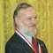
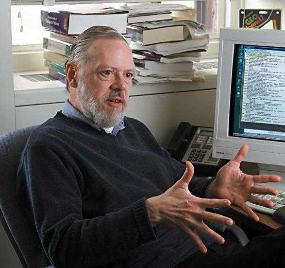

<div class="profile"><div>
  <div class="source">
C (1969)
  </div>
  <div class="detail">
    
    <div class="search"><a href="http://www.google.com/cse?cx=partner-pub-6997921015773263:4467526896&ie=UTF-8&q=Dennis Ritchie" target="_blank"></a> | <a href="http://en.wikipedia.org/wiki/Dennis_Ritchie" target="_blank">wiki</a></div>
    <div class="name"><a href="http://cm.bell-labs.com/who/dmr/" target="_blank">Dennis Ritchie</a></div>
    <div class="info">Bell Telephone Laboratories. <b>Dennis MacAlistair Ritchie</b> (username: dmr, born September 9, 1941 - <b>October 8, 2011</b>) is an American computer scientist notable for developing C and for having influence on other programming languages, as well as operating systems such as Multics and Unix.
    <p><b><a href="http://en.wikipedia.org/wiki/C_language" target="_blank">C</a></b> is a general-purpose computer programming language developed between 1969 and 1973 by Dennis Ritchie at the Bell Telephone Laboratories for use with the Unix operating system. Although C was designed for implementing system software, it is also widely used for developing portable application software.</p>
    </div>
  </div>
  <div class="photo">
    
  </div>
</div></div>
